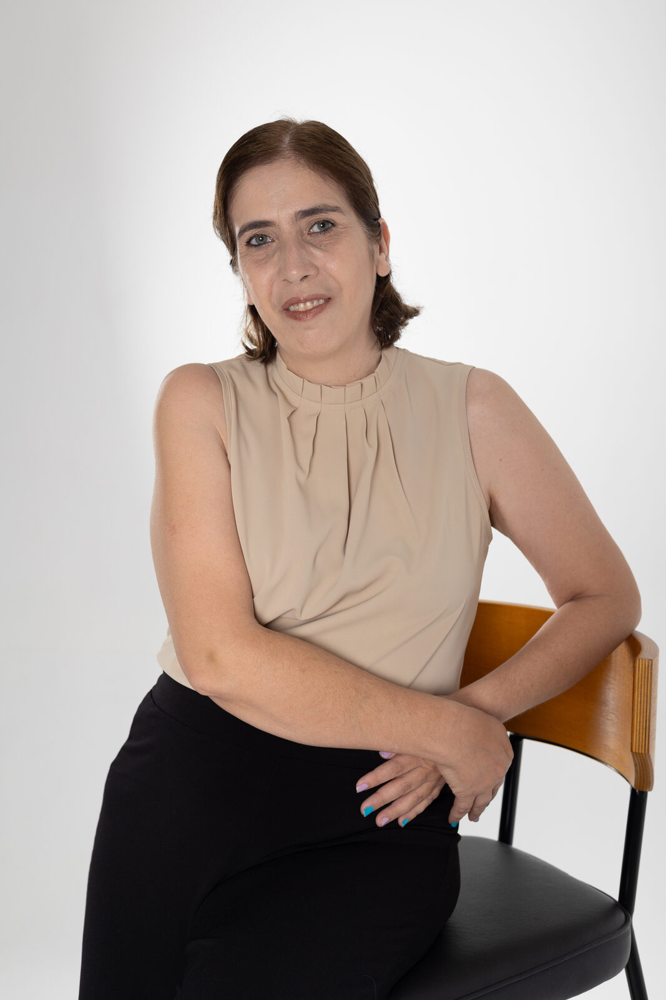
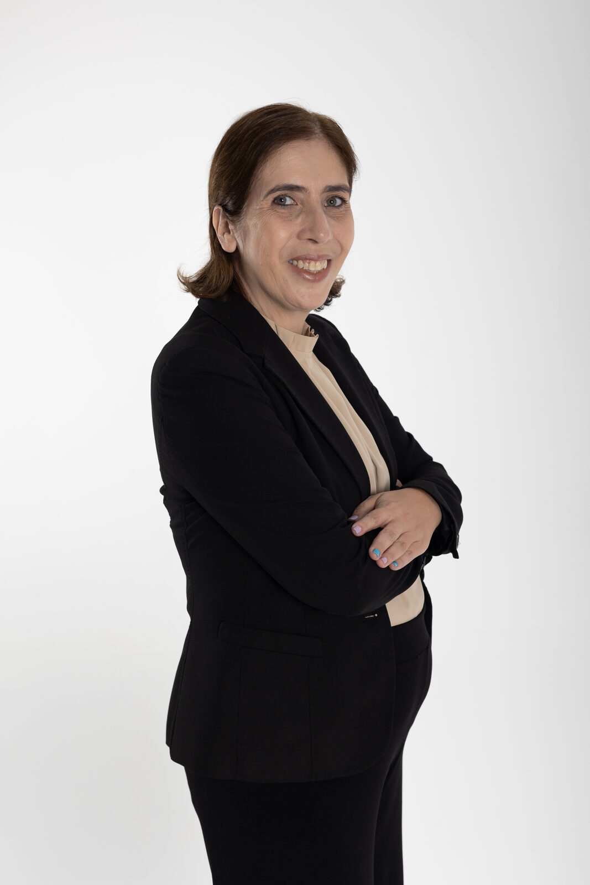

IT Forum Mulheres 2026: entre as 35 profissionais reconhecidas
Segunda edição da lista do IT Forum, que avalia impacto no ecossistema, inovação, liderança, contribuição para diversidade e visibilidade pública.
Ver a lista no IT ForumProfessora do Instituto de Informática da UFG, cofundadora e diretora executiva do CEIA, o Centro de Excelência em Inteligência Artificial. Sob minha gestão, o centro já executou mais de 150 projetos de PD&I com empresas e captou mais de R$ 500 milhões em cinco anos.
Empresa, pesquisa ou imprensa: me conte em poucas palavras o que você procura e eu direciono para o time certo.

Segunda edição da lista do IT Forum, que avalia impacto no ecossistema, inovação, liderança, contribuição para diversidade e visibilidade pública.
Ver a lista no IT Forum
Uma pausa sem fiscalização externa e sem acesso para universidades tende a concentrar a tecnologia nas empresas que já lideram.
Ler na Exame
A maior honraria do Estado de Goiás. Um reconhecimento que pertence a cada pesquisador, estudante, parceiro e gestor público que apostou no CEIA.
Ler a notíciaCada frente tem um resultado que dá para medir. Nenhuma delas é trabalho de uma pessoa só.
+150 projetos de PD&I executados com empresas
Cofundei o CEIA em 2019 e sou diretora executiva desde 2022. Como Unidade Embrapii, o centro divide com a empresa o investimento em pesquisa. Em 2022, ficamos em 1º lugar no Prêmio Embrapii entre 85 unidades, pela avaliação das próprias empresas contratantes.
Apresentar uma demanda1ª instituição latino-americana no programa AI for Good da ONU
O CEIA faz parte do programa NVIDIA AI Nations. Pesquisadores do centro lançaram com o Google o GAIA, modelo aberto em português do Brasil. Em 2026, os materiais de formação do CEIA entraram na plataforma AI for Good.
Ler sobre o AI for Good1º bacharelado em inteligência artificial do Brasil, criado em 2020
O curso nasceu de projetos de PD&I com empresas e forma a equipe que hoje executa esses projetos. Na outra ponta, a Olimpíada de IA Aplicada, pela qual sou responsável, oferece R$ 420 mil em prêmios na edição de 2026.
Ver a frente de formaçãoResultado de muitas mãos: pesquisadores, estudantes, empresas parceiras e gestores públicos que apostaram em inteligência artificial feita em Goiás.
Números atualizados em outubro de 2026 com base nas informações institucionais do CEIA.

Quem chega até nós costuma trazer uma destas impressões. Os fatos ajudam a ajustar a conversa logo no início.
São mais de 150 projetos de PD&I executados com empresas e mais de R$ 500 milhões captados em cinco anos, boa parte com a iniciativa privada. Aplicação prática é o dia a dia do centro.
Os projetos aplicados se sustentam em pesquisa de fato: meta-learning, aprendizado por reforço e otimização multiobjetivo com meta-heurísticas. Foi essa base que deu origem ao Bacharelado em IA.
Não. O CEIA entra como coinvestidor nos projetos de PD&I que desenvolve, por meio do modelo Embrapii. Risco e investimento são compartilhados com a empresa parceira.
O primeiro contato chega direto a mim, e o encaminhamento para a equipe de PD&I acontece a partir dessa conversa, sem intermediários.

Há mais de 20 anos trabalho com inovação, tecnologia e inteligência artificial. Sou doutora em Ciências de Computação e Matemática Computacional pela USP e, há mais de 13 anos, professora do Instituto de Informática da UFG. Hoje dirijo o CEIA, que fundei com Anderson Soares em 2019 no campus Samambaia, em Goiânia.
O CEIA começou com projetos de PD&I com a iniciativa privada, nos quais fui pesquisadora principal. Já coordenei diretamente mais de 15 projetos, com empresas como Acordo Certo, Bancorbrás, Copel Distribuição e iFood. Hoje o centro reúne mais de 1.000 pesquisadores e atende, por meio dos parceiros, mais de 150 milhões de brasileiros.
Produção acadêmica completa no Currículo Lattes. Atualizações sobre o CEIA e inteligência artificial no meu LinkedIn.
Investir em bolsas é investir em pessoas. Por isso o CEIA paga bolsa a estudantes desde a graduação, dentro de projetos reais com empresas, e já trouxe de volta mais de 15 pesquisadores que trabalhavam fora do Brasil.


Entrevistas e reportagens em que falei sobre infraestrutura, dado em português, formação de talentos e projetos aplicados. Os links levam ao conteúdo original de cada veículo.
Você faz a sua inteligência própria, você resolve um problema regional, um problema do país.Exame, outubro de 2026

Existem outros tipos de IAs brasileiras que a gente poderia desenvolver.
Eu teria muito cuidado em transformar superinteligência em uma categoria técnica ou jurídica neste momento.
Sobre o convênio do CEIA com o Governo de Goiás e o lugar do Brasil na cadeia da IA. Se analisarmos historicamente, o Brasil cresceu muito como fornecedor de commodities.
Faltam infraestrutura e dado público em português, mas há espaço para IA soberana em nichos como saúde e biodiversidade, onde o dado é brasileiro.
Toda vez que chega um novo equipamento, existe uma curva de aprendizado para adaptar as IAs a essas novas arquiteturas.
Perfil sobre a criação do primeiro Bacharelado em IA do Brasil e a liderança de uma mulher em uma área com predominância masculina.
Jornalistas: temas em que posso contribuir incluem infraestrutura de IA no Brasil, dado em português, soberania com foco em nichos, formação de talentos e projetos de PD&I com empresas.
Propor uma pautaPalco, gestão pública e laboratório. O trabalho acontece nesses lugares, quase sempre com outras pessoas no enquadramento.


A conversa começa no mesmo lugar para todo mundo. A partir da primeira mensagem, eu direciono para o time certo.
WhatsApp (62) 98100-8111. Em poucas palavras: quem é você, de onde fala e o que precisa.
Falar comigo no WhatsApp